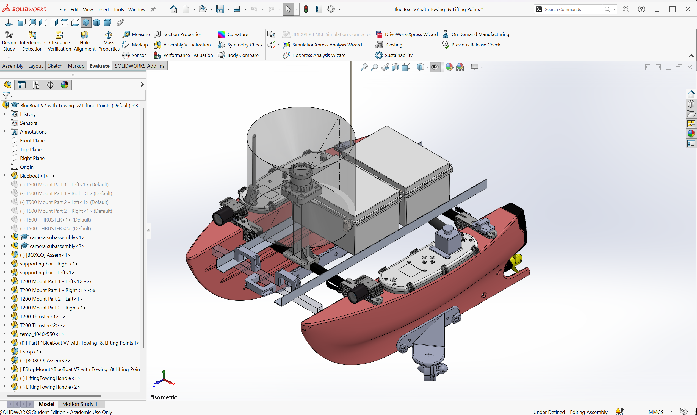

Selected Work
Archimedes Autonomous Vehicles


Swipe or scroll horizontally for more →
Archimedes Autonomous Vehicles is a team of autonomous vehicles in NTU, building a drone-boat-submarine system that navigates, senses, and cooperates without a human at the wheel. I'm a member of the mechanical team, currently designing adjustable mounts for sensors and electronics in SolidWorks, and replicating the vehicle's waterproof electronics box — complete with cable penetrators — as a full SolidWorks model with proper fixture points, ahead of assembly and simulation. Alongside the CAD work, I've been doing hands-on prototyping and fabrication of the mounting components and structural supports using 3D printing and aluminum extrusions. Recently, I have been helping with compiling the BOM for task builds, and getting hands on with replicating the task obstacles.
- Designing adjustable mounts for sensors and electronics utilising SolidWorks
- Replicating the waterproof electronics box with waterproof cable penetrators, including fixture points for assembly and simulation
- Prototyping and fabricating mounting components and structural supports